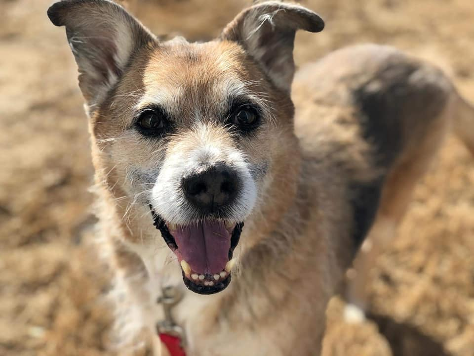

This is a fun tribute page to our loyal companions!

Scruffy was very energetic at a young age. We adopted him when I was in middle school from a local animal shelter here in Charlotte, NC.
Unfortunately in April 2021 we had to put him down due to old age and his arthritis. He was a happy, laid back dog and he was an enormous part of my life growing up.
Fun Facts about Scruffy
Type of Dog: German Shephard mixed with Wired-Haired Griffin
Always brave to stand in front of things bigger than him and bark, but afraid of things smaller than him
Loved to eat cheese
Questions about Scruffy
How old was Scruffy when you first adopted him?
He was around 3 or 4 years old, the shelter was not 100% sure of his age but that is what they believed his age was at the time.
German Shephards can be quite big, was Scruffy a big dog also?
He was actually quite a bit smaller than other German Shephards because of him being mixed with Wired-Haired Griffin. Those dogs are very small.